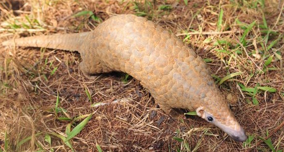

Shocking Scale of Pangolin Smuggling Revealed 
Annual seizures have been estimated at roughly 10,000 animals but experts warn the illegal trade is far greater.
The numbers of pangolins traded are shocking, and all the more so considering the pharmaceutical pointlessness of the trade. This trade is intolerably wasteful.
Pangolins: 13 facts about the world's most hunted animal
With its armoured shell and peculiar gait, the humble pangolin looks more like an anteater prepped for medieval battle than an animal under threat. Illegal trade in South Asia, however, has now rendered the scaly mammals the most trafficked animal on earth
The Most Trafficked Animal You've Never Heard Of
Learn why a bizarre, scale-covered mammal -- which has been called a walking pinecone and a modern-day dinosaur -- is trafficked by the ton. It could go extinct before most people realize it exists.
That 'honey badger' guy made a new video, this time about pangolins
Randall is trying to raise the profile of another little-known creature: the pangolin. He's doing it in hopes people will learn about this weird, scale-covered mammal before it goes extinct. There's a massive international black market for pangolin scales and meat. It's often traded by the ton.